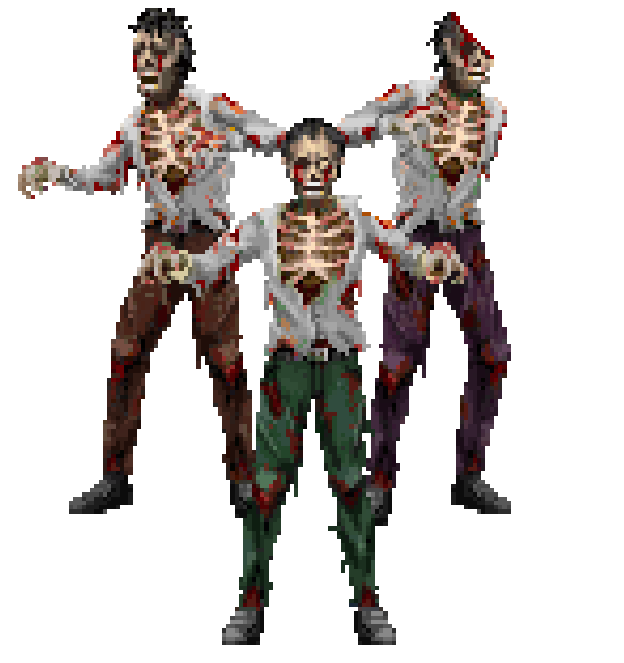

THE DAMNABLES
Circle Archive Classification
ENTITY CLASS:
Damnable
ALTERNATE NAME:
Arurim
CAUSE:
Mazzik Possession
HOST TYPES:
Living / Dead / Rare Non-Biological Vessels
THREAT LEVEL:
Mid-High
PRIMARY ORIGIN:
Shedim Manifestation Through Physical Vessel

Recovered Circle Archive Image
Damnable Specimen Classification
What Is A Damnable?

A Damnable, known in ancient records as an Arurim, is a physical vessel that has been possessed and altered by a Shedim spirit known as a Mazzik.
The term Damnable does not refer to a specific species of creature, but rather a state of corruption caused when a Mazzik successfully inhabits and rewrites a physical vessel.
A Damnable may originate from a living being, a deceased body, or in rare and extreme circumstances, a non-biological object. Any suitable vessel capable of being occupied and altered by a Mazzik may potentially become classified as a Damnable.
Although possession can occur in many forms, Mazzik possession is unique because the entity does not merely influence the host. It begins altering the vessel itself, gradually rewriting its physical structure to better accommodate the possessing spirit.
This process is most effective in biological organisms, particularly humans, due to the connection between the physical body, consciousness and spiritual essence.
A Damnable is not an undead creature and should never be considered a simple reanimated corpse. It is a demon inhabiting a physical form.
The body may once have belonged to a living person, but the intelligence, personality and intent controlling it belongs to the Mazzik within.
The Damnable Creation Process

The creation of a Damnable begins when a Mazzik successfully enters and establishes control over a physical vessel.
The purpose of the possession is not simply to control the host. The Mazzik uses the vessel as a foundation from which it can exist within the physical world.
Because Shedim spirits are not naturally bound to three-dimensional physical form, they require a suitable vessel in order to manifest. Through possession, the Mazzik begins rewriting the structure of the host until the body becomes increasingly compatible with its own nature.
In biological hosts, particularly humans, this process affects both the physical and spiritual aspects of the individual.
The transformation is not a disease, infection or automatic mutation. A Mazzik is an intelligent entity capable of controlling the speed, appearance and progression of the corruption.
Although the majority of Damnables follow a recognised progression of increasing corruption, the stages are not a fixed mechanical process. A Mazzik may delay, accelerate or maintain a certain appearance depending on what best serves its purpose.
Mazzik Intent And Behavioural Patterns

The behaviour of a Damnable is determined by the objectives of the Mazzik controlling the vessel.
Although all Damnables possess intelligence, deception and psychological manipulation are not always their primary methods of attack. A Mazzik chooses the strategy that provides the greatest advantage.
When the objective is rapid elimination of a target, a Mazzik may prioritise physical manifestation over psychological manipulation. In these circumstances, possessed hosts may appear to behave similarly to traditional undead creatures, attacking relentlessly and without hesitation.
This behaviour does not indicate a lack of intelligence. The Mazzik is simply using the most efficient method available.
If creating physical combat vessels is the fastest way to remove a threat, then the possession process may be accelerated in order to produce stronger manifestations as quickly as possible.
However, when a target has greater significance, a Mazzik may choose a different approach. It may preserve a more human appearance, imitate the original host and use memories, emotions and deception as weapons.
A Damnable's appearance should therefore never be considered a reliable indication of its true level of corruption.
Deception And Psychological Manipulation

Mazzikim are capable of understanding fear, emotion and human behaviour. When deception serves their objective, they may deliberately conceal their true nature.
A Mazzik may maintain a more familiar or harmless appearance if it allows it to influence its victims more effectively.
This can include imitating the voice, memories or personality traits of the original host.
The purpose of this deception is not compassion or preservation of the host. The identity of the possessed individual becomes another tool used by the entity.
In certain circumstances, a Mazzik may deliberately prevent further physical transformation because appearing human provides a greater advantage than revealing its true form.
The most dangerous Damnables are not always those that appear the most corrupted. Sometimes the greatest threat is the one that still appears familiar.
The Kelipah And The Divine Spark

The corruption caused by a Mazzik affects more than the physical body. The entity also attacks the spiritual connection within the host.
During the earliest stages of possession, the Mazzik begins forming a kelipah around the divine spark contained within the human soul.
Because the Mazzik exists within shadow, the divine light within the soul acts as a barrier against complete corruption. The kelipah surrounds and obscures this light, allowing the influence of darkness to spread.
As more layers of kelipah are created, the connection between the host and their original consciousness becomes weaker.
The purpose of this process is not merely domination of the body. The Mazzik is attempting to consume the connection between the host and the divine spark, replacing the original presence with its own corruption.
Early possession may involve only limited layers of kelipah, allowing the host to potentially be recovered through exorcism.
However, as corruption progresses, the light within the soul becomes increasingly buried beneath the influence of the Mazzik.
Once the divine spark has been completely extinguished, the original individual can no longer return and the vessel has become fully claimed by the Shedim entity.
Stages Of Transformation

The transformation of a Damnable usually follows a recognised progression as the Mazzik continues altering the vessel.
These stages are used by the Circle to classify the condition of a possessed host. However, they should not be interpreted as a simple infection cycle.
A Mazzik is an intelligent entity and may deliberately maintain, accelerate or alter the appearance of a vessel depending on its objectives.
A host appearing to be in an early stage of corruption does not necessarily mean the Mazzik itself is limited to that stage. In some cases, the entity may conceal its true level of manifestation until the moment it is most advantageous to reveal it.
Stage One - Initial Possession
During the earliest stage, the Mazzik has entered the vessel and begun establishing control.
The host may still appear largely human, although signs of possession begin to emerge. Changes may include altered behaviour, unnatural movements and visible signs of the entity's influence.
The original consciousness may still remain partially present, and separation of the Mazzik through exorcism may still be possible.
At this stage, the Mazzik begins constructing the first layers of kelipah around the divine spark of the host.
Stage Two - Corrupted Damnable
As possession continues, the Mazzik begins actively rewriting the vessel.
The body gradually becomes less like its original form and begins reflecting the influence of the possessing entity.
Physical changes become more noticeable, and the host becomes increasingly controlled by the Mazzik.
Although the original identity may still exist beneath the corruption, the connection between the host and the divine spark has become increasingly weakened.
Stage Three - Twisted Accursed
The Twisted Accursed state represents an advanced stage of corruption where the influence of the Mazzik has become physically dominant.
The vessel has been rewritten to such an extent that it begins resembling a distorted physical reflection of the possessing entity rather than the original host.
At this stage, the body may display severe mutation, unnatural anatomy and characteristics associated with the Shedim within.
Although the original consciousness may theoretically still exist, there are no recorded cases of successful recovery from this condition.
Because the Mazzik itself created the alterations, complete reversal remains theoretically possible. However, such an event would require circumstances considered almost impossible.
Stage Four - Full Shedim Manifestation
The final stage occurs when the Mazzik has rewritten the vessel completely and created a physical manifestation of itself within the material world.
At this point, the vessel is no longer simply a possessed being. It has become a physical form through which the Shedim entity can exist.
The distinction between host and possessing spirit has effectively disappeared.
The resulting entity is no longer classified as a Damnable, but as a fully manifested Shedim.
Rapid Manifestation Events

Although Damnables usually progress through recognised stages, there are documented situations where a Mazzik appears to bypass visible stages of transformation.
This does not mean the process has been ignored. Instead, the Mazzik may have deliberately concealed its level of corruption or delayed manifestation until the correct conditions are met.
If revealing its true form provides a tactical advantage, a Mazzik may immediately complete the transformation of the vessel and manifest its physical form.
This behaviour is commonly associated with situations where the entity's objective is direct elimination rather than psychological manipulation.
In these cases, the possessed host is not being used to torment the victim. It is being converted into a weapon as efficiently as possible.
The result may appear similar to an outbreak of mindless creatures, but the intelligence behind the attack remains that of the Mazzik.
The Lost Host

One of the most dangerous aspects of a Damnable is the connection between the Mazzik and the identity of the original host.
The person who once occupied the body may no longer be in control, but their memories, appearance and personality traits may remain accessible to the possessing entity.
A Mazzik may use these remnants as a weapon, imitating someone familiar in order to manipulate those who knew the original individual.
This behaviour is not caused by the host. The cruelty comes entirely from the intelligence of the Mazzik controlling the vessel.
The entity may deliberately maintain a familiar appearance if it believes this will cause greater emotional damage to its victims.
Damnables And Zombies

Damnables are frequently mistaken for zombies due to their appearance and behaviour, especially during the earlier stages of corruption.
A possessed body may appear corpse-like, move unnaturally and continue pursuing its victims despite extreme physical damage.
However, Damnables are not zombies.
A zombie is an undead creature with a fundamentally different origin and nature. A Damnable is a living or dead vessel controlled by an intelligent demonic entity.
Unlike zombies, Damnables are capable of speech, reasoning, deception and supernatural abilities.
The resemblance exists because a Mazzik may not require a human-looking vessel once physical manifestation becomes its priority. The body may deteriorate, mutate and resemble a corpse, creating similarities between the two creatures.
However, beneath the damaged flesh is not a mindless undead creature. It is a Shedim spirit using a physical vessel.
Physical Resilience

A Damnable's physical form does not function according to normal biological limitations.
The body is sustained and controlled by the Mazzik within, allowing it to survive injuries that would immediately kill an ordinary creature.
Damnables can continue functioning after severe bodily destruction, including the loss of limbs, organs and even the head.
The destruction of the brain is not necessarily fatal because the physical body is no longer the true source of the entity's existence.
In extreme cases, separated portions of a Damnable may continue moving independently, as the Mazzik maintains control over the corrupted vessel.
Some advanced Damnables are capable of levitation and unnatural movement, allowing them to continue hunting even after their physical structure has deteriorated beyond normal movement.
Supernatural Abilities

The abilities displayed by a Damnable depend on the individual Mazzik and the condition of the host.
Common abilities include:
• Enhanced strength and physical ability.
• Extreme resistance to injury.
• Ability to survive without normal biological functions.
• Levitation and unnatural movement.
• Intelligent speech and communication.
• Psychological manipulation.
• Use of the host's memories and identity for deception.
• Limited supernatural perception and awareness.
The greatest danger of a Damnable is the combination of supernatural power and intelligence. They are not creatures that simply attack. They understand, adapt and choose their methods.
Weaknesses And Recovery

The possibility of saving a possessed host depends on how far the Mazzik has progressed in rewriting the vessel.
During early possession, separation through exorcism may still be possible before the corruption becomes permanent.
As more layers of kelipah surround the divine spark, the connection between the host and their original self becomes weaker.
Advanced Damnables, especially those approaching the Twisted Accursed state, have almost no recorded cases of successful recovery.
However, because the Mazzik created the corruption itself, complete reversal is theoretically possible if the entity were somehow convinced or forced to undo its own work.
Whether a Mazzik would honour such an agreement is another matter entirely.
Once the divine spark has been extinguished and the vessel has become a complete Shedim manifestation, the original host is considered lost.
Related Archives
Further information regarding the entities connected to Damnables can be found within the following archives:
Mazzikim Archive
Records concerning the Shedim spirits responsible for Damnable creation.
Shedim Archive
Information regarding the greater entities behind Mazzikim manifestations.
Rogues Gallery
Known creatures and supernatural encounters of the Horryefieing Universe.